먼저 생각해 보세요.
außerhalb der Stadt. die Stadt가 der Stadt로 바뀌었어요. 무슨 격인가요?
innerhalb와 außerhalb 뒤에는 Genitiv가 와요.
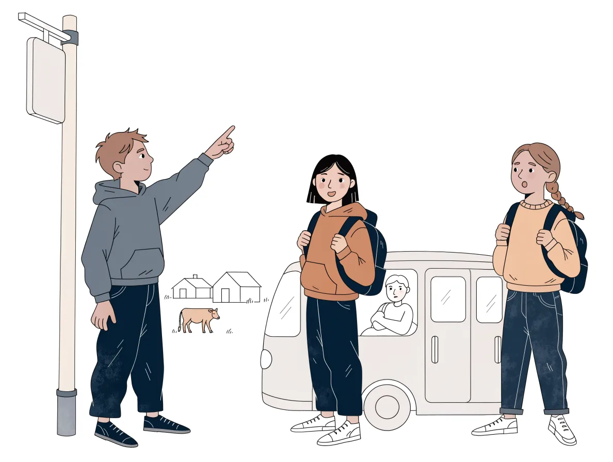
5월이에요. Yuna와 Emma가 처음으로 Lukas네 마을에 놀러 가요. 쾰른에서 버스로 한 시간이 걸려요. 조용하고 공기가 맑지만 버스는 한 시간에 한 대뿐이에요. 9b는 도시와 시골 가운데 어디가 살기 좋은지, 미래의 도시는 어떤 모습일지 이야기해요.
눌러서 들어 보세요.
먼저 생각해 보세요.
außerhalb der Stadt. die Stadt가 der Stadt로 바뀌었어요. 무슨 격인가요?
innerhalb와 außerhalb 뒤에는 Genitiv가 와요.
Lektion 2의 낱말 다섯 개를 다시 떠올려 보세요.
문법 während (Gegensatz), da (Grund), innerhalb, außerhalb + Genitiv, Ich wünschte, …
이 과를 마치면 도시와 시골을 견주고, 미래의 도시를 상상하고, 내 입장을 정해 말할 수 있어요.
5월의 토요일, Yuna와 Emma가 Lukas네 마을에 왔어요.
들으면서 찾아보세요. Lukas는 학교까지 얼마나 걸리나요?
일주일 뒤, 9b가 수업에서 미래의 쾰른을 발표해요.
들으면서 찾아보세요. Emma네 조는 시내를 어떻게 바꾸려고 하나요?
두 대화를 듣고 답하세요.
Wie viele Menschen wohnen in Lukas' Dorf?
Der Bus fährt alle zehn Minuten.
Er fährt nur einmal pro Stunde.
Wie lange braucht Lukas zur Schule?
Was wünscht sich Emma?
Was möchte Emmas Gruppe für Köln?
Elifs Gruppe will Bäume und Gärten auf den Dächern.
Lukas는 시골 마을에 무엇이 필요하다고 하나요?
낱말 33개예요. 낱말이나 예문 앞의 단추를 누르면 소리가 나요. 명사는 der, die, das를 색으로 구분했어요.
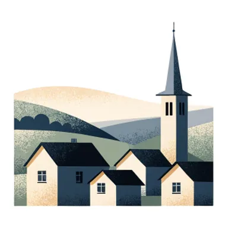
das Dorf, die Dörfer 마을, 시골 동네
Lukas wohnt in einem kleinen Dorf.Lukas는 작은 마을에 살아요.
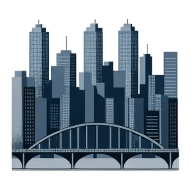
die Großstadt, die Großstädte 대도시
Seoul ist eine Großstadt.서울은 대도시예요.
die Innenstadt, die Innenstädte 시내, 도심
In der Innenstadt gibt es viele Geschäfte.시내에는 가게가 많아요.
der Stadtrand 도시 변두리
Wir wohnen am Stadtrand.우리는 변두리에 살아요.
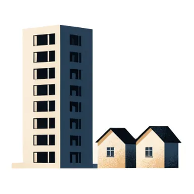
das Hochhaus, die Hochhäuser 고층 건물
Yuna wohnt in einem Hochhaus.Yuna는 고층 건물에 살아요.
der Verkehr 교통, 차량 통행
Am Morgen gibt es viel Verkehr.아침에는 차가 많이 다녀요.
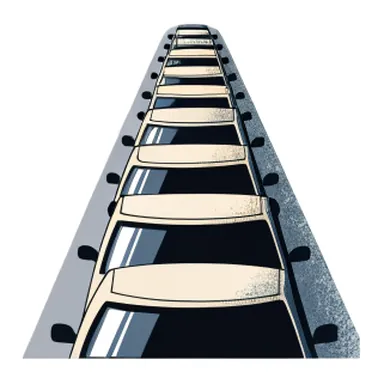
der Stau, die Staus 교통 체증
Wir stehen seit einer Stunde im Stau.우리는 한 시간째 길이 막혀 서 있어요.
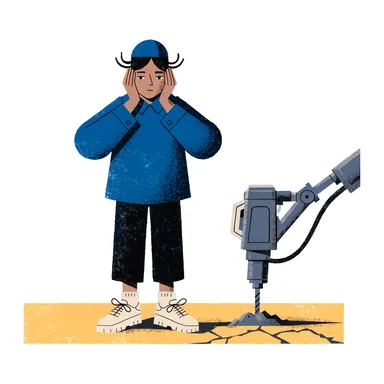
der Lärm 소음
Bei dem Lärm kann ich nicht schlafen.이렇게 시끄러우면 잠을 잘 수 없어요.
laut 시끄러운, 소리가 큰
In der Stadt ist es laut.도시는 시끄러워요.
die Luft 공기
Die Luft auf dem Land ist sauber.시골 공기는 깨끗해요.
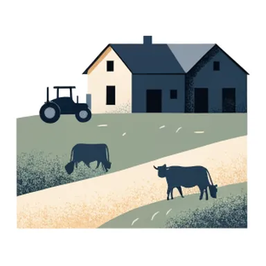
der Bauernhof, die Bauernhöfe 농장
Auf dem Bauernhof gibt es viele Tiere.농장에는 동물이 많아요.
die Miete, die Mieten 집세
Die Miete ist sehr hoch.집세가 아주 비싸요.
mieten, hat gemietet 세 들다, 빌리다
Wir mieten eine Wohnung in Köln.우리는 쾰른에서 집을 세 들어 살아요.
die Wohngemeinschaft, die Wohngemeinschaften 여럿이 함께 사는 집
Viele Studenten wohnen in einer Wohngemeinschaft.많은 대학생이 여럿이 함께 사는 집에 살아요.
die Nachbarschaft 이웃, 동네 사람들
In unserer Nachbarschaft kennen sich alle.우리 동네에서는 모두 서로 알아요.
die Umgebung 주변, 근처
In der Umgebung gibt es viele Wälder.주변에 숲이 많아요.
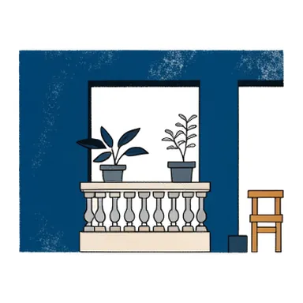
der Balkon, die Balkone 발코니
Auf dem Balkon stehen Blumen.발코니에 꽃이 놓여 있어요.
der Stock 층
Wir wohnen im dritten Stock.우리는 3층에 살아요.
das Gebäude, die Gebäude 건물
Das höchste Gebäude ist die Kirche.가장 높은 건물은 교회예요.
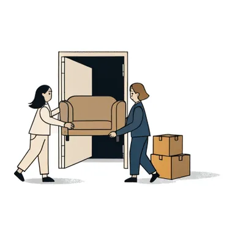
einziehen, ist eingezogen 이사 들어오다
Nächste Woche ziehen wir in die neue Wohnung ein.다음 주에 우리는 새집으로 이사 들어가요.
ausziehen, ist ausgezogen 이사 나가다
Mit neunzehn ist mein Bruder ausgezogen.우리 형은 열아홉 살에 집에서 나갔어요.
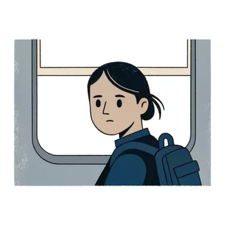
pendeln, ist gependelt 통근하다, 통학하다
Lukas pendelt jeden Tag nach Köln.Lukas는 날마다 쾰른으로 통학해요.
die Bevölkerung 인구, 주민
Die Bevölkerung der Stadt wächst.그 도시의 인구가 늘어나요.
wachsen, ist gewachsen (du wächst, er wächst) 자라다, 늘어나다
Die Städte wachsen jedes Jahr.도시는 해마다 커져요.
bauen, hat gebaut 짓다
Hier wird ein Hochhaus gebaut.여기에 고층 건물을 지어요.
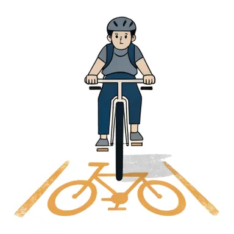
der Radweg, die Radwege 자전거 길
Wir brauchen mehr Radwege.자전거 길이 더 필요해요.
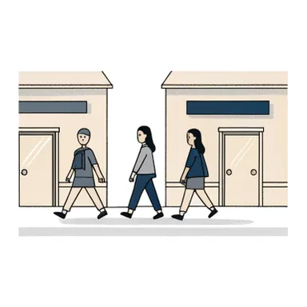
die Fußgängerzone, die Fußgängerzonen 보행자 거리
In der Fußgängerzone fahren keine Autos.보행자 거리에는 차가 다니지 않아요.
autofrei 차가 없는
Am Sonntag ist die Straße autofrei.일요일에는 그 길에 차가 없어요.
die Verbindung, die Verbindungen 연결, 교통편
Die Verbindung nach Köln ist schlecht.쾰른으로 가는 교통편이 나빠요.
lebendig 활기찬
Köln ist eine lebendige Stadt.쾰른은 활기찬 도시예요.
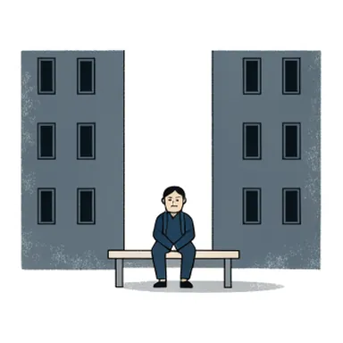
einsam 외로운
Ohne Freunde ist man einsam.친구가 없으면 외로워요.
innerhalb ~ 안에
Innerhalb der Stadt fahre ich mit dem Rad.도시 안에서 나는 자전거를 타요.
außerhalb ~ 밖에
Lukas wohnt außerhalb der Stadt.Lukas는 도시 밖에 살아요.
이 과의 낱말로 여덟 문제를 풀어요.
예문을 보고 답해 보세요.
Während Emma in der Stadt wohnt, lebt Lukas im Dorf. 이 während는 무슨 뜻인가요?
규칙
während는 '~하는 동안'이라는 뜻 말고 두 가지를 맞세울 때도 써요. da는 weil처럼 까닭을 말하는데, 듣는 사람도 이미 아는 까닭일 때 문장 앞에 자주 써요. 둘 다 동사를 맨 끝으로 보내요.
| 보기 | |
|---|---|
| während | Während ich Rad fahre, nimmt Emma den Bus. |
| da | Da es regnet, bleiben wir zu Hause. |
주의 부문장이 앞에 오면 주문장은 동사로 시작해요. Da es regnet, bleiben wir zu Hause.
예문을 보고 답해 보세요.
außerhalb … Stadt. 빈칸에 알맞은 말은 무엇인가요?
규칙
innerhalb와 außerhalb 뒤에는 Genitiv를 써요. 곳뿐 아니라 시간에도 써요. innerhalb einer Woche는 '일주일 안에'라는 뜻이에요.
| 곳 | 시간 | |
|---|---|---|
| innerhalb | innerhalb der Stadt | innerhalb eines Monats |
| außerhalb | außerhalb des Dorfes | außerhalb der Ferien |
주의 도시 이름처럼 관사가 없는 말 앞에서는 von을 써요. außerhalb von Köln.
예문을 보고 답해 보세요.
Ich wünschte, wir hätten einen Garten. Emma네 집에는 정원이 있나요?
규칙
지금은 그렇지 않지만 그랬으면 하고 바랄 때 Ich wünschte, …를 써요. 뒤 문장에는 wäre, hätte, würde, könnte를 쓰고, 동사는 둘째 자리에 둬요.
| 지금 | 바람 |
|---|---|
| Wir haben keinen Garten. | Ich wünschte, wir hätten einen Garten. |
| Der Bus fährt selten. | Ich wünschte, der Bus würde öfter fahren. |
| Ich bin nicht in Seoul. | Ich wünschte, ich wäre in Seoul. |
주의 Ich wünsche mir ein Fahrrad는 받고 싶은 것을 말해요. Ich wünschte, …는 지금 사실이 아닌 일을 말해요.
Emma네 가족이 이사를 놓고 이야기해요. 듣고 답하세요.
Stadt oder Land?
Thomas Ich habe ein Haus mit Garten gesehen. Es liegt zwanzig Kilometer außerhalb von Köln.
Sabine Ein Garten wäre schön. Aber da ich oft bis spät am Abend arbeite, brauche ich einen kurzen Weg zur Arbeit.
Emma Und ich? Ich müsste jeden Tag pendeln. Meine Freunde wohnen alle in der Stadt.
Thomas Aber du hättest ein großes Zimmer. Und vielleicht einen Hund.
Emma Einen Hund? Wirklich? Ich wünschte, wir könnten morgen einziehen!
Sabine Langsam. Zuerst fahren wir zusammen zu dem Haus.
Wo liegt das Haus?
Warum braucht Sabine einen kurzen Weg zur Arbeit?
Emma findet die Idee zuerst nicht gut.
Emma의 마음은 왜 바뀌나요?
듣고 알맞은 것을 고르세요.
어느 도시에 사람이 더 많이 사나요?
Während Seoul fast zehn Millionen Einwohner hat, hat Köln nur eine Million.
Lukas는 왜 일찍 집에 가야 하나요?
Da der letzte Bus um acht fährt, muss ich früh nach Hause.
Emma네 집에는 발코니가 있나요?
Ich wünschte, ich hätte einen Balkon.
학교 앞에는 무엇이 다니지 않나요?
Unsere Schule liegt innerhalb der Fußgängerzone. Dort fahren keine Autos.
학교 신문에 실린 두 사람의 글이에요. 읽고 답하세요.
Stadt oder Land?
Lukas (15): Ich wohne in einem Dorf mit fünfhundert Einwohnern. Die Luft ist sauber, und jeder kennt jeden. Aber da es bei uns weder ein Kino noch einen Supermarkt gibt, muss ich für alles in die Stadt fahren. Ich wünschte, der Bus würde öfter fahren.
Emma (15): Ich wohne in der Innenstadt von Köln. Innerhalb von zehn Minuten bin ich in der Schule, im Kino oder bei meinen Freunden. Während Lukas pendeln muss, gehe ich zu Fuß. Aber es ist laut, und die Mieten sind hoch. Ich wünschte, wir hätten einen Garten.
Was gefällt Lukas an seinem Dorf?
In Lukas' Dorf gibt es ein Kino.
Es gibt weder ein Kino noch einen Supermarkt.
Was wünscht sich Lukas?
Wie kommt Emma zur Schule?
Emma는 도시의 어떤 점이 나쁘다고 하나요?
9b가 미래의 쾰른을 위해 낸 생각이에요. 보고 답하세요.
Köln 2050
| Idee | Wer? | Wo? |
|---|---|---|
| keine Autos | Emma | Innenstadt |
| Dachgärten | Elif | Hochhäuser |
| gutes Internet | Lukas | Dörfer |
| mehr Radwege | Yuna | ganz Köln |
Wer möchte Gärten auf den Dächern?
Lukas möchte gutes Internet in der Innenstadt.
Er möchte gutes Internet in den Dörfern.
Wo soll es mehr Radwege geben?
während와 da예요. 한국어 뜻을 보고 알맞은 말을 고르세요.
Emma in der Stadt wohnt, lebt Lukas auf dem Land.
Emma는 도시에 사는데, Lukas는 시골에 살아요.
der Bus selten fährt, nehme ich das Fahrrad.
버스가 드물게 다녀서 나는 자전거를 타요.
Da es regnet, zu Hause.
비가 와서 우리는 집에 있어요.
부문장이 앞에 오면 주문장은 동사로 시작해요.
es in Seoul viele Hochhäuser gibt, gibt es in meinem Dorf nur kleine Häuser.
서울에는 고층 건물이 많은데, 우리 마을에는 작은 집만 있어요.
ich außerhalb wohne, muss ich früh aufstehen.
나는 도시 밖에 살아서 일찍 일어나야 해요.
Da die Miete zu hoch , ziehen wir um.
집세가 너무 비싸서 우리는 이사해요.
한국어 뜻을 보고 알맞은 말을 고르세요.
Lukas wohnt außerhalb Stadt.
Lukas는 도시 밖에 살아요.
Innerhalb Dorfes gibt es keinen Supermarkt.
마을 안에는 슈퍼마켓이 없어요.
Wir wohnen außerhalb Köln.
우리는 쾰른 밖에 살아요.
관사가 없는 이름 앞에서는 von을 써요.
Ich wünschte, ich einen Garten.
정원이 있으면 좋을 텐데.
Ich wünschte, der Bus öfter fahren.
버스가 더 자주 다니면 좋을 텐데.
Ich wünschte, ich jetzt in Seoul.
지금 서울에 있으면 좋을 텐데.
알맞은 낱말을 고르세요.
Am Morgen stehen viele Autos im .
아침에는 많은 차가 길이 막혀 서 있어요.
Die für die Wohnung ist sehr hoch.
그 집의 집세가 아주 비싸요.
Wir wohnen im vierten .
우리는 4층에 살아요.
In der dürfen keine Autos fahren.
보행자 거리에는 차가 다니면 안 돼요.
Lukas muss jeden Tag in die Stadt .
Lukas는 날마다 도시로 통학해야 해요.
Die der Städte wächst jedes Jahr.
도시의 인구는 해마다 늘어나요.
낱말을 순서대로 눌러 문장을 만드세요.
버스가 드물게 다녀서 나는 자전거를 타.
Lukas는 도시 밖에 살아.
정원이 있으면 좋을 텐데.
나는 통학하는데, Emma는 걸어서 가.
낱말과 뜻을 짝지으세요.
듣고 그대로 써 보세요.
Ich wohne außerhalb der Stadt. 나는 도시 밖에 살아.
Ich wünschte, wir hätten einen Garten. 우리 집에 정원이 있으면 좋을 텐데.
In der Stadt ist es laut. 도시는 시끄러워.
Ich wohne in der Innenstadt. 나는 시내에 살아.
Ich wohne außerhalb der Stadt. 나는 도시 밖에 살아.
Wir wohnen im dritten Stock. 우리는 3층에 살아.
In der Umgebung gibt es … 주변에 ~이 있어.
Während es in der Stadt laut ist, ist es auf dem Land ruhig. 도시는 시끄러운데, 시골은 조용해.
In der Stadt gibt es mehr Geschäfte. 도시에는 가게가 더 많아.
Auf dem Land ist die Luft besser. 시골은 공기가 더 좋아.
Ich wünschte, ich hätte … ~이 있으면 좋을 텐데.
Ich wünschte, ich würde … wohnen. ~에 살면 좋을 텐데.
Ich wünschte, wir könnten … 우리가 ~할 수 있으면 좋을 텐데.
Ich würde lieber in der Stadt leben, da … ~하니까 나는 도시에 사는 게 더 좋아.
Für mich ist … am wichtigsten. 나한테는 ~이 가장 중요해.
Das hat Vorteile und Nachteile. 그건 장점도 단점도 있어.
대화 A에서 역할을 하나 고르세요. 상대의 말은 음성으로 나오고, 내 차례에는 직접 말해요.
내가 사는 곳을 떠올리며 적으세요. 완성된 문장을 소리 내어 읽어 보세요.
Ich wohne in einer Großstadt.
Wir wohnen im achten Stock eines Hochhauses.
In der Umgebung gibt es viele Geschäfte.
Ich wünschte, wir hätten einen Garten.
Stadt oder Land?
어디에 살고 싶은지 정해서 의견 글을 써요. 여덟 문장쯤 써요.
Ich würde lieber auf dem Land leben. Da es dort weniger Verkehr gibt, ist die Luft sauber. Während man in der Stadt oft im Stau steht, kann man auf dem Land gut mit dem Rad fahren. Außerdem kennt man seine Nachbarn. Ein Nachteil ist, dass es außerhalb der Stadt wenige Geschäfte gibt. Auch die Verbindungen sind schlecht. Ich wünschte, es würde mehr Busse geben. Trotzdem ist das Land für mich der beste Ort zum Leben.
다 쓴 뒤에 확인해 보세요.
Ich kann das Leben in der Stadt und auf dem Land vergleichen.도시의 삶과 시골의 삶을 견줄 수 있어요.
Ich kann beschreiben, wie eine Stadt der Zukunft aussehen könnte.미래의 도시가 어떤 모습일지 그려 말할 수 있어요.
Ich kann sagen, wo ich leben möchte und warum.어디에 살고 싶은지, 왜 그런지 말할 수 있어요.